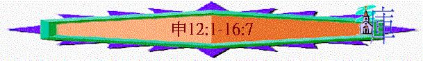
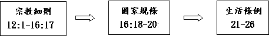

[ Home ] [ Up ] [ 申命記緒論 ] [ 申1-3 ] [ 申4-6 ] [ 申7-8 ] [ 申9-11 ] [ 申12:1-16:7 ] [ 申16:18-20:20 ] [ 申21-23:18 ] [ 申23:19-26:19 ] [ 申27-30 ] [ 申31-34 ]
|
持
得
豐
盛
之
關
鍵
|
|
勇敢踏上
|
謹守遵行
|
選擇上好
|
追念失敗
|
得蒙賜福
|
效法神僕
|
|
１－３
|
４－２６
|
２７－３０
|
３１－３２
|
３３
|
３４
|
3.謹守遵行的細則(12-26)
「活於世的日子，在耶和華你們列祖的神所賜你們為業的地上，要謹守遵行的律例典章乃是這些。」12:1
〜前面題及敬神愛神之重點，後面則講及他們入到神所賜的地方，要謹守遵行的細則
〜結構：

A.宗教細則(12:1-16:7)
〜啟發問題：入至迦南後，已不需要再過住帳棚的生活了，應在何處敬拜神？
迦南地很多異教風俗，選民進入後，要注意甚麼？
〜特別之處：12-14
很多「不」「不可」字眼；15-16很多「要」字眼
〜重點：不效法迦南人方式的敬拜神，而要以神的吩咐事奉祂
a.不效法外邦敬拜的模式(12)
「你們不可照他們那樣事奉耶和華你們的神。」12:4
「你不可向耶和華你的神這樣行，因為他們向他們的神行了耶和華所憎嫌所恨惡的一切事，甚至將自己的兒女用火焚燒，獻與他們的神。」12:31
（１）敬拜的對象要專一
「你們要將所趕出的國民事奉神的各地方，無論是在高山，在小山，在各青翠樹下，都毀壞了；也要拆毀他們的祭壇，打碎他們的柱像，用火焚燒他們的木偶，砍下他們雕刻的神像，並將其名從那地方除滅。」12:2-3
〜以色列人進入迦南後第一件事要清除、拆毀、打碎、焚燒、砍下，迦南地所有偶像及祭壇，不留一個，因神才是他們專一敬拜的對像，除神以外，不可再有別的
（２）敬拜的地點勿任意
「我們今日在這裡所行的是各人行自己眼中看為正的事，你們將來不可這樣行；因為你們還沒有到耶和華你神所賜你的安息地，所給你的產業。但你們過了約但河，得以住在耶和華你們神使你們承受為業之地，又使你們太平，不被四圍的一切仇敵擾亂，安然居住。那時要將我所吩咐你們的燔祭、平安祭、十分取一之物，和手中的舉祭，並向耶和華許願獻的一切美祭，都奉到耶和華你們神所選擇要立為他名的居所。」12:8-11
「但耶和華你們的神從你們各支派中選擇何處為立他名的居所，你們就當往那裡去求問。」12:5
「你要謹慎，不可在你所看中的各處獻燔祭。」12:13
「耶羅波安心裡說：「恐怕這國仍歸大衛家；這民若上耶路撒冷去，在耶和華的殿裡獻祭，他們的心必歸向他們的主猶大王羅波安，就把我殺了，仍歸猶大王羅波安。」耶羅波安王就籌劃定妥，鑄造了兩個金牛犢，對眾民說：「以色列人哪，你們上耶路撒冷去實在是難；這就是領你們出埃及地的神。」他就把牛犢一隻安在伯特利，一隻安在但。這事叫百姓陷在罪裡，因為他們往但去拜那牛犢。耶羅波安在邱壇那裡建殿，將那不屬利未人的凡民立為祭司。」王上12:26-31
〜在未入迦南前，他們是飄流曠野，在飄流之處敬拜神，但入到迦南後，卻不可，要在神指定地方敬拜神
〜為甚麼呢？
因為若不統一一個地方，人會按當地環境，風俗，隨自己意思，方式建壇，時間日久，沒人監管，會慢慢按己意，製造偶像，偏離神
〜以色列王耶羅波安就是一個例子，他不想百姓到耶路撒冷敬拜神，就在但及伯特利建邱壇、牛犢，以致使北面以色列家陷在罪中
（３）敬拜的祭物要尊重
(A)尊重生命
「然而，在你各城裡都可以照耶和華你神所賜你的福分，隨心所欲宰牲吃肉；無論潔淨人不潔淨人都可以吃，就如吃羚羊與鹿一般。」12:15
「只是你要心意堅定，不可吃血，因為血是生命；不可將血（原文作生命）與肉同吃。」12:23
〜甘心祭的祭物或肉是可以吃的，但不可以吃血，因血代表生命，神立此規條原因是要人尊重生命，不亂殺害生命
〜以當時的外邦人是會吃血的，選民不應效法的
(B)尊重聖物
「你的五穀、新酒，和油的十分之一，或是牛群羊群中頭生的，或是你許願獻的，甘心獻的，或是手中的舉祭，都不可在你城裡吃。但要在耶和華你的神面前吃，在耶和華你神所要選擇的地方，你和兒女、僕婢，並住在你城裡的利未人，都可以吃；也要因你手所辦的，在耶和華你神的面前歡樂。」12:17-18
〜在舊約很多祭物都是全獻或歸祭司，及利未人的，但平安祭(或作甘心祭還願)，一部份肉是奉獻者可享用的
〜而奉獻之祭物已分別為聖，是屬神的，人要在神所選擇的地方(後期指耶路撒冷殿中)吃，可以歡樂享受，但不能在別處，因是聖物，是神賜的，叫人在神聖地方中更想起是屬於神，人也學習聖物不隨便，有敬重的心，也避免將所獻的供物在別處獻上，別處享用，慎防出於邱壇，混雜異教方式敬拜神
（４）敬拜的方式要謹慎
「那時就要謹慎，不可在他們除滅之後隨從他們的惡俗，陷入網羅，也不可訪問他們的神說：『這些國民怎樣事奉他們的神，我也要照樣行。』你不可向耶和華你的神這樣行，因為他們向他們的神行了耶和華所憎嫌所恨惡的一切事，甚至將自己的兒女用火焚燒，獻與他們的神。」12:30-31
〜外邦人的敬拜方式是神所恨惡的，例如將兒女用火焚燒獻給假神，選民要謹慎，不可效法，不可照行
b.不聽從虛假叛逆的道理(13)
(1)不聽從虛假叛逆的道理
「你們中間若有先知或是做夢的起來，向你顯個神蹟奇事，對你說：『我們去隨從你素來所不認識的別神，事奉他吧。』他所顯的神蹟奇事雖有應驗，你也不可聽那先知或是那做夢之人的話；因為這是耶和華你們的神試驗你們，要知道你們是盡心盡性愛耶和華你們的神不是。」13:1-3
(A)不聽
〜即使有些人行神蹟，行奇事，但是叫你偏離神，要不聽
(B)治死
「那先知或是那做夢的既用言語叛逆那領你們出埃及地、救贖你脫離為奴之家的耶和華你們的神，要勾引你離開耶和華你神所吩咐你行的道，你便要將他治死。這樣，就把那惡從你們中間除掉。」13:5
(2)不依從親友引誘的說話
「你的同胞弟兄，或是你的兒女，或是你懷中的妻，或是如同你性命的朋友，若暗中引誘你，說：『我們不如去事奉你和你列祖素來所不認識的別神，是你四圍列國的神。』無論是離你近，離你遠，從地這邊到地那邊的神，你不可依從他，也不可聽從他，眼不可顧惜他。你不可憐恤他，也不可遮庇他。」13:6-8
(A)不從
〜即使是你的至愛、親人、朋友，若叫你事奉別神，也不可依從
(B)殺他
「總要殺他；你先下手，然後眾民也下手，將他治死。」13:9
(3)要除滅勾引選民的群體
「在耶和華你神所賜你居住的各城中，你若聽人說，有些匪類從你們中間的一座城出來勾引本城的居民，說：『我們不如去事奉你們素來所不認識的別神。』」13:12-13
(A)查究
「你就要探聽，查究，細細地訪問，果然是真，準有這可憎惡的事行在你們中間。」13:14
(B)除滅
「你必要用刀殺那城裡的居民，把城裡所有的，連牲畜，都用刀殺盡。」13:15
C.不跟隨異教生活習俗(14:1-26)
(1)哀傷習俗
「你們是耶和華你們神的兒女。不可為死人用刀劃身，也不可將額上剃光；因為你歸耶和華你神為聖潔的民，耶和華從地上的萬民中揀選你特作自己的子民。」14:1-2
「他們將所得的牛犢預備好了，從早晨到午間，求告巴力的名說：「巴力啊，求你應允我們！」卻沒有聲音，沒有應允的。他們在所築的壇四圍踊跳。到了正午，以利亞嬉笑他們，說：「大聲求告吧！因為他是神，他或默想，或走到一邊，或行路，或睡覺，你們當叫醒他。」他們大聲求告，按著他們的規矩，用刀槍自割、自刺，直到身體流血。」王上
18:26-28
「他們上巴益，又往底本，到高處去哭泣。摩押人因尼波和米底巴哀號，各人頭上光禿，鬍鬚剃淨。」賽15:2
「耶和華說：「看哪，日子將到，我要刑罰一切受過割禮、心卻未受割禮的，就是埃及、猶大、以東、亞捫人、摩押人，和一切住在曠野剃周圍頭髮的；因為列國人都沒有受割禮，以色列人心中也沒有受割禮。」」耶9:25-26
〜外邦人在哀傷或困境中似乎會用力劃身，剃頭去呼求他的神，但作為聖潔的民卻不可，要分別出來，不學習他們的習俗
(2)飲食風俗
(A)不可吃的牲畜
「凡可憎的物都不可吃。」14:3
「豬因為是分蹄卻不倒嚼，就與你們不潔淨。這些獸的肉，你們不可吃，死的也不可摸。」14:8
(B)不可吃的水產
「凡無翅無鱗的都不可吃，是與你們不潔淨。」14:10
(C)不可吃的飛鳥
「不可吃的乃是鵰、狗頭鵰、紅頭鵰。」14:12
(D)不可吃的死屍
「凡自死的，你們都不可吃，可以給你城裡寄居的吃，或賣與外人吃，因為你是歸耶和華你神為聖潔的民。「不可用山羊羔母的奶煮山羊羔。」」14:21
〜不吃的原因，可能有幾個
(a)宗教問題
「不潔之物」通常與迦南宗教或其獻祭有關
(b)衛生問題
陸地上的免子，沙番，海�媯L翅無鱗之物，並空中的蝙蝠等，自死的，都是易「帶菌」的
(E)不用異教煮法
「凡自死的，你們都不可吃，可以給你城裡寄居的吃，或賣與外人吃，因為你是歸耶和華你神為聖潔的民。「不可用山羊羔母的奶煮山羊羔。」」14:21
「地裡首先初熟之物要送到耶和華你神的殿。「不可用山羊羔母的奶煮山羊羔。」」出23:19
〜以山羊羔母的奶煮山羊羔，是迦南常見宗教儀式，與巴力崇拜有密切關係
d.要善用真神所賜的產業(14:27-15:23)
(1)當獻之物
(A)十分之一的出產
「你要把你撒種所產的，就是你田地每年所出的，十分取一分。」14:22
「凡以色列中出產的十分之一，我已賜給利未的子孫為業；因他們所辦的是會幕的事，所以賜給他們為酬他們的勞。」民18:21
「因為以色列人中出產的十分之一，就是獻給耶和華為舉祭的，我已賜給利未人為業。所以我對他們說：『在以色列人中不可有產業。』」」民18:24
(B)牛羊群中的頭生
「又要把你的五穀、新酒、和油的十分之一，並牛群羊群中頭生的，吃在耶和華你神面前，就是他所選擇要立為他名的居所。這樣，你可以學習時常敬畏耶和華你的神。」申14:23
「你牛群羊群中頭生的，凡是公的，都要分別為聖，歸耶和華你的神。牛群中頭生的，不可用他耕地；羊群中頭生的，不可剪毛。這頭生的，你和你的家屬，每年要在耶和華所選擇的地方，在耶和華你神面前吃。這頭生的若有什麼殘疾，就如瘸腿的、瞎眼的，無論有什麼惡殘疾，都不可獻給耶和華你的神。」15:19-21
「耶和華曉諭摩西說：「以色列中凡頭生的，無論是人是牲畜，都是我的，要分別為聖歸我。」」出13:1-2
「日後，你的兒子問你說：『這是什麼意思？』你就說：『耶和華用大能的手將我們從埃及為奴之家領出來。那時法老幾乎不容我們去，耶和華就把埃及地所有頭生的，無論是人是牲畜，都殺了。因此，我把一切頭生的公牲畜獻給耶和華為祭，但將頭生的兒子都贖出來。這要在你手上作記號，在你額上作經文，因為耶和華用大能的手將我們從埃及領出來。』」出13:14-16
〜為甚麼要獻頭生的牛羊，目的是要日後子孫記得神大能的拯救，當日十災中的殺長子之災，以色列的一切頭生避過此災，所以日後頭生要分別出來歸神，以報答記念，尊敬、愛這位曾拯救他們的神
(2)當施之恩
(A)顧念事奉之人----十分之一的獻上
「住在你城裡的利未人，你不可丟棄他，因為他在你們中間無分無業。」申14:27
〜十分之一大部份是屬於利未人，他們在地上無地產之業，而忠心事奉神，百姓獻上十分之一是本應的
〜而小部份是可以在聖所與家人一同共享
(B)顧念孤兒寡婦----特別的十分之一
「每逢三年的末一年，你要將本年的土產十分之一都取出來，積存在你的城中。在你城裡無分無業的利未人，和你城裡寄居的，並孤兒寡婦，都可以來，吃得飽足。這樣，耶和華你的神必在你手裡所辦的一切事上賜福與你。」」14:28-29
〜每逢三年的末一年，要將十分之一取出，除了顧念利未人外，也要顧念孤兒寡婦
(C)顧念欠債之人
「每逢七年末一年，你要施行豁免。豁免的定例乃是這樣：凡債主要把所借給鄰舍的豁免了；不可向鄰舍和弟兄追討，因為耶和華的豁免年已經宣告了。若借給外邦人，你可以向他追討；但借給你弟兄，無論是什麼，你要鬆手豁免了。」15:1-4
〜到第七年，選民要安恩年，停止農業耕種，欠債的人也停工，但選民要免去以色列人的債(外邦人可追討)
(D)顧念缺乏弟兄
「在耶和華你神所賜你的地上，無論哪一座城裡，你弟兄中若有一個窮人，你不可忍著心、揝著手不幫補你窮乏的弟兄。總要向他鬆開手，照他所缺乏的借給他，補他的不足。」15:7-8
〜如何對待窮困的弟兄
(a)看見苦況→不忍心旁觀
(b)補充缺乏→要甘心鬆手
「你總要給他，給他的時候心裡不可愁煩；因耶和華你的神必在你這一切所行的，並你手裡所辦的事上，賜福與你。」15:10
(c)對待他們→勿存惡意念
「你要謹慎，不可心裡起惡念，說：『第七年的豁免年快到了』，你便惡眼看你窮乏的弟兄，什麼都不給他，以致他因你求告耶和華，罪便歸於你了。」15:9
(E)顧念奴僕婢女
(a)釋放他們
「你任他自由的時候，不可使他空手而去。」15:13
(b)恩待他們
「要從你羊群、禾場、酒醡之中多多地給他；耶和華你的神怎樣賜福與你，你也要照樣給他。」15:14
(c)任他選擇
「他若對你說：『我不願意離開你』，是因他愛你和你的家，且因在你那裡很好。」15:16
e.要記念真神所立的節期(16:1-17)
「你一切的男丁要在除酵節、七七節、住棚節，一年三次，在耶和華你神所選擇的地方朝見他，卻不可空手朝見。」16:16
〜以色列的男丁一年要有3個節期，除酵節(即逾越節)，七七節(即五旬節)及住棚節(又名收藏節)要來到神所選擇地方(本章所強調的)
〜守節的原因如下：
(1)記念神恩
(A)神的拯救----逾越節
＊日期：亞筆月(以色列人正月)十四日
「你要注意亞筆月，向耶和華你的神守逾越節，因為耶和華你的神在亞筆月夜間領你出埃及。」16:1
「你吃這祭牲，不可吃有酵的餅；七日之內要吃無酵餅，就是困苦餅，（你本是急忙出了埃及地）要叫你一生一世記念你從埃及地出來的日子。」16:3
(B)神的供應----七七節
＊時間：正月十六日後七個安息日的次日，即五十日，是選民收穫季節之末
「你要計算七七日：從你開鐮收割禾稼時算起，共計七七日。你要照耶和華你神所賜你的福，手裡拿著甘心祭，獻在耶和華你的神面前，守七七節。」16:9-10
(C)神的眷顧----住棚節
＊時間：7月15日至22日，前後8日
「你把禾場的穀、酒醡的酒收藏以後，就要守住棚節七日。」16:13
「你們要住在棚裡七日；凡以色列家的人都要住在棚裡，好叫你們世世代代知道，我領以色列人出埃及地的時候曾使他們住在棚裡。我是耶和華你們的神。」利23:42-43
(2)保守純一
「你當在耶和華所選擇要立為他名的居所，從牛群羊群中，將逾越節的祭牲獻給耶和華你的神。」16:2
「在耶和華你神所賜的各城中，你不可獻逾越節的祭。」16:5
「你和你兒女、僕婢，並住在你城裡的利未人，以及在你們中間寄居的與孤兒寡婦，都要在耶和華你神所選擇立為他名的居所，在耶和華你的神面前歡樂。」16:11
「在耶和華所選擇的地方，你當向耶和華你的神守節七日；因為耶和華你神在你一切的土產上和你手裡所辦的事上要賜福與你，你就非常地歡樂。」16:15
〜強調要在神選擇地方守節，目的保守在敬拜方式上不任意而行，保守宗教上純一
(3)獻上供物
「你一切的男丁要在除酵節、七七節、住棚節，一年三次，在耶和華你神所選擇的地方朝見他，卻不可空手朝見。」16:16
(A)不留一點的獻上
「在你四境之內，七日不可見麵酵，頭一日晚上所獻的肉，一點不可留到早晨。」16:4
〜逾越節的羊羔代表基督，祂不留一點為人捨命，人也應不留一點的奉獻給神
(B)甘心樂意的獻上
「你要照耶和華你神所賜你的福，手裡拿著甘心祭，獻在耶和華你的神面前，守七七節。」16:10
〜人蒙神的賜福，應甘心存感恩、甘心的心報答神恩
(C)盡己所能的獻上
「各人要按自己的力量，照耶和華你神所賜的福分，奉獻禮物。」16:17
(4)享受歡樂
「你和你兒女、僕婢，並住在你城裡的利未人，以及在你們中間寄居的與孤兒寡婦，都要在耶和華你神所選擇立為他名的居所，在耶和華你的神面前歡樂。」16:11
「守節的時候，你和你兒女、僕婢，並住在你城裡的利未人，以及寄居的與孤兒寡婦，都要歡樂。」16:14
(5)記念別人
[ Home ] [ Up ] [ 申命記緒論 ] [ 申1-3 ] [ 申4-6 ] [ 申7-8 ] [ 申9-11 ] [ 申12:1-16:7 ] [ 申16:18-20:20 ] [ 申21-23:18 ] [ 申23:19-26:19 ] [ 申27-30 ] [ 申31-34 ]